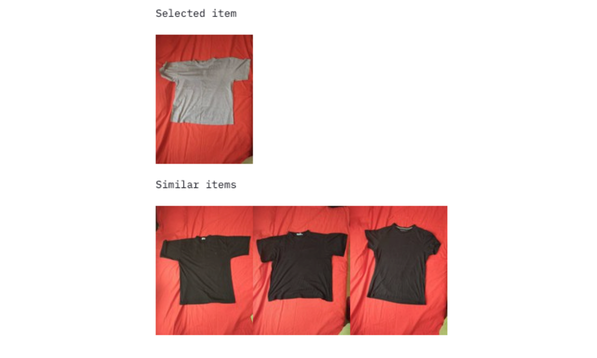
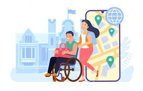

Resume WebApplication:
Web application for choosing best candidates based on job description and user resume using ml techniques. Application which helps the HRs to identify the best candidate from the huge amount of resources

Clothing Similarity Search:
Suggests similar clothes based on the provided query using NLP techniques. It is docker containerized project which is been deployed in the google cloud.

MobileApplicationforDisabled People:
An Application which helps the disabled people to book their assistants for their required destinations. This mobile app portrays the requirements for both oldage and disabled people.
